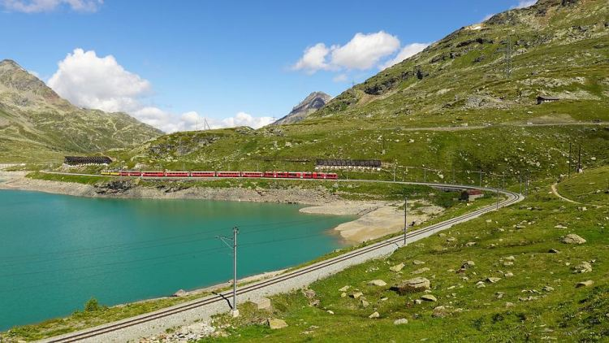
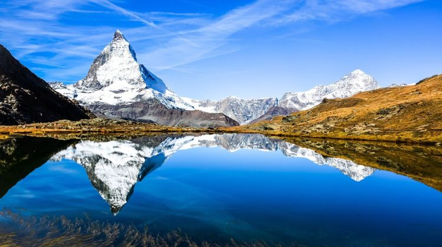
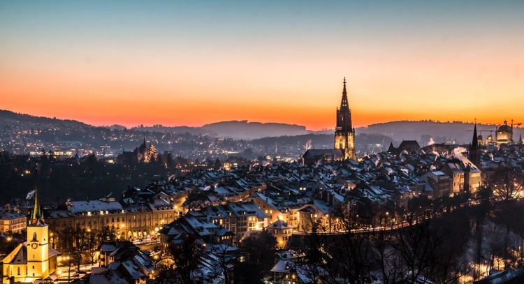

Svájc híres a semlegességéről, de számos szervezettel működik együtt. Érdekesség az országról, hogy
fővárosa
Bern, legnagyobb városa Zürich, viszont a főváros csak az 5. helyen helyezkedik el az ország legnépesebb
városai közül. Szomszédai Németország, Franciaország, Olaszország, Ausztria és Liechtenstein. Svájc
természeti adottságának köszönhetően is rengeteg látnivalóval rendelkezik. Gazdasága erős és fejlett,
különösen a banki szektor, a precíziós óragyártás és a gyógyszeripar területén. Az ország híres a svájci
csokoládéról, sajtokról és világszínvonalú síparadicsomairól, mint Zermatt vagy St. Moritz. Politikai
rendszere egyedülálló, hiszen közvetlen demokráciája lehetővé teszi az állampolgárok számára, hogy
népszavazásokon döntsenek fontos ügyekről. Svájc nem tagja az Európai Uniónak, de szoros gazdasági
kapcsolatokat ápol vele. Természeti szépségei és magas életszínvonala miatt az egyik legélhetőbb ország
a világon. Az alpesi ország néhány legszebb helyét mutatom be!
Országnéző ötletek
Bernina-vasút

Az Alpok legmagasabban fekvő adhéziós vasúti pályája, és 7%-ot is elérő meredekségével az egyik
legmeredekebb adhéziós vasút a világon. Az Albula-vasúttal együtt 2008 óta az UNESCO Világörökség része.
A svájci St. Moritz üdülővárost köti össze a Bernina-hágón keresztül az olaszországi Tiranóval. Az úton
55 alagút és közel 200 híd található, Európa egyik legszebb vasútvonalának tartják. A vonalon
található a híres Brusiói spirálviadukt is. A piros Bernina Express panorámavonatok egész évben
szállítják az utasokat a hófödte hegycsúcsok, gleccserek és alpesi tavak között. Az út során híres
látnivalók, mint a Landwasser-viadukt és az Albula-alagút is megcsodálhatók. A Bernina vasút különleges
élményt nyújt minden évszakban, hiszen nyáron zöld völgyeken, télen pedig mesebeli havas tájakon halad
keresztül.
Matterhorn

A Matternhorn a svájci-olasz határnál, háromszög alakban emelkedő hegycsúcs. A 4478 méteres csúcs
legtöbbet fényképezett turistalátványosságok egyike Európában. A hegycsúcs Európa hetedik legmagasabb
csúcsa. Meredek, piramis alakú csúcsa miatt a világ egyik legismertebb hegye,
amely sok hegymászót vonz. Első sikeres megmászása 1865-ben történt, de a veszélyes útvonalai miatt ma
is komoly kihívást jelent. A hegy lábánál fekszik Zermatt, egy népszerű svájci üdülőhely, ahonnan
lenyűgöző kilátás nyílik a csúcsra. Téli és nyári sportok kedvelt célpontja, síelők és túrázók számára
egyaránt. A Matterhorn sziluettje ihlette a Toblerone csokoládé híres formáját is.
Bern

Svájc fővárosa az Aare folyó mentén található, központja az UNESCO világörökség része.Az óváros a folyó
egyik hurokszerű kanyarulatában fekszik, széles utcáin 16. századi motívumokkal díszített kutak
találhatók. A csillagászati órával is felszerelt óratorony (svájci németben Zytglogge-Turm), amely 1191
és 1256 között a nyugati városkapu volt, szintén mesterműnek számít. Bern híres a medveparkjáról is,
ahol a város jelképének számító medvék élnek. Kulturális központként számos múzeumnak és galériának ad
otthont, köztük a Paul Klee Központnak. A nyugodt, mégis pezsgő hangulatú Bern Svájc egyik legélhetőbb
városa.